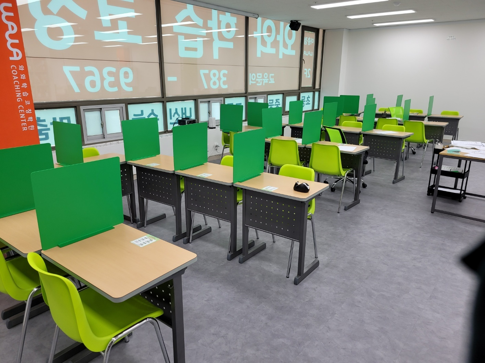
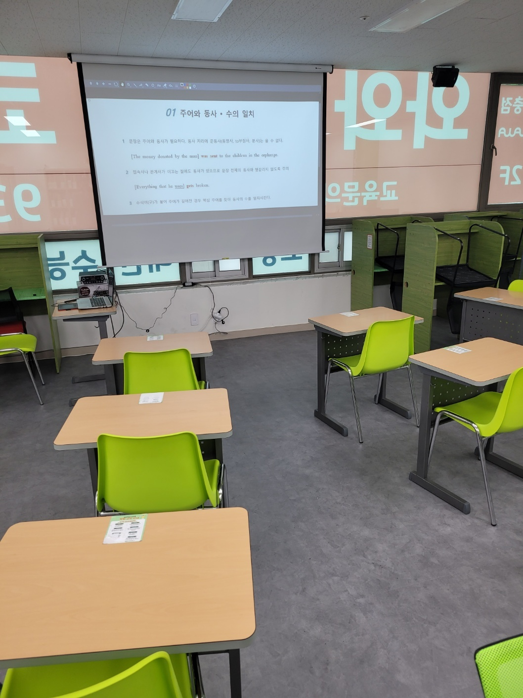
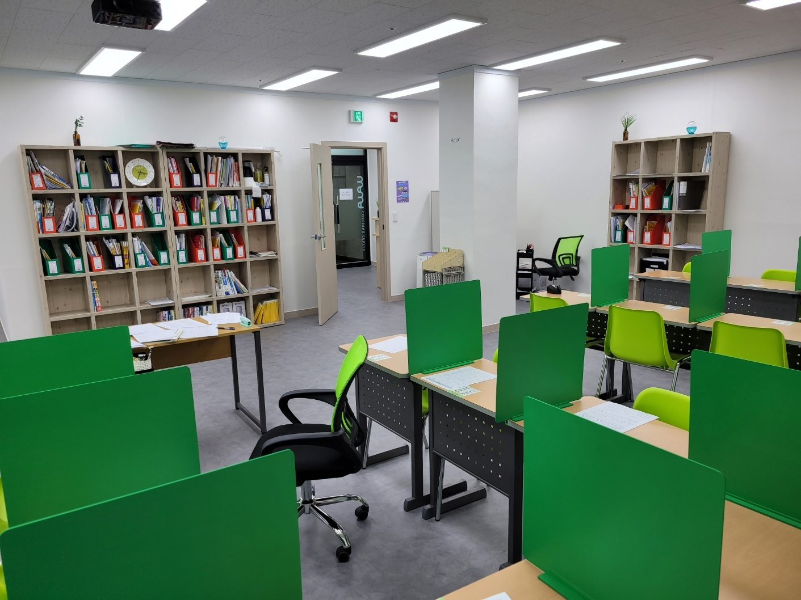
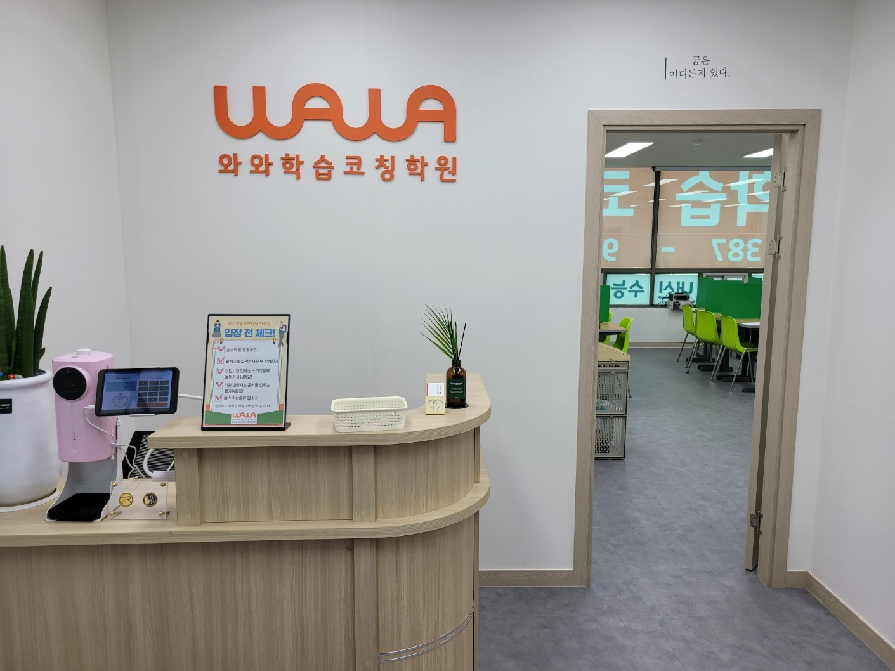

안녕하세요, 경기 평택시 이충동의 와와학습코칭 이충점입니다. 이충로 상가 건물 2층에 있는 센터로, 창문에는 바깥에서 읽히도록 '와와 학습코칭'과 '내신·수능' 글자를 붙여 두었습니다. 안에서 보면 그 글자가 거꾸로 읽히는데, 사진 속 교실이 바로 그 창문 안쪽입니다.
이충초·반지초·송일초·서정리초 아이들, 이충중·효명중·은혜중 학생들, 그리고 이충고·은혜고·효명고로 이어지는 학생들이 오가는 동네입니다. 오늘은 교실 한쪽 스크린에 띄운 영어 문법 한 장 이야기를 해 보려고 합니다.

스크린 한 장에 적힌 세 줄
사진 속 스크린의 제목은 '주어와 동사·수의 일치'입니다. 적힌 내용은 세 줄뿐입니다.
- 문장은 주어와 동사가 필요하다. 동사 자리에 준동사(동명사, to부정사, 분사)는 올 수 없다.
- 접속사나 관계사가 이끄는 절에도 동사가 있으므로, 문장 전체의 동사와 헷갈리지 않도록 주의한다.
- 수식어(구)가 붙어 주어가 길어진 경우, 핵심 주어를 찾아 동사의 수를 일치시킨다.
예문에는 대괄호가 쳐져 있습니다. [The money donated by the man] was sent … 에서 괄호 안이 통째로 주어이고, 진짜 동사는 괄호 밖의 was sent입니다. donated도 동사처럼 생겼지만 '그 사람이 기부한'이라는 꾸밈말일 뿐입니다. 두 번째 예문 [Everything that he uses] gets broken 에서도 uses는 괄호 안 절의 동사이고, 문장 전체의 동사는 gets입니다. 핵심 주어가 Everything이라 동사에 -s가 붙습니다.
"단어는 다 아는데 해석이 이상해요"
중학교 3학년에서 고등학교 1학년으로 넘어가는 시기에 영어에서 가장 자주 듣는 말입니다. 중학교 교과서 문장은 대체로 짧아서 단어 뜻만 이어 붙여도 뜻이 통합니다. 그런데 고등학교 지문에서는 주어 하나에 분사구, 관계사절이 줄줄이 붙습니다. 이때 동사처럼 생긴 단어를 아무거나 문장의 동사로 잡으면 해석이 통째로 틀어집니다.
스크린의 세 줄이 결국 가르치는 건 하나입니다. "이 문장의 진짜 동사는 어디 있지?"라고 스스로 묻는 습관입니다. 이 질문이 몸에 붙으면 수의 일치 같은 어법 문제뿐 아니라 긴 지문 독해도 함께 편해집니다. 수의 일치, 동사와 준동사 구별은 고등학교 영어 내신과 수능 어법 문제에서 꾸준히 다뤄지는 주제이기도 합니다.
그래서 이 공부는 고1이 되고 나서보다 중3 2학기, 지금 시작하는 편이 부담이 적습니다. 새 교과서와 첫 고등 내신을 동시에 받아 드는 3월보다, 아직 시간이 있는 지금이 문장 뼈대를 연습하기 좋은 때입니다.

설명은 짧게, 연습은 가림판 책상에서
스크린으로 개념을 짚는 시간은 길 필요가 없습니다. 규칙 세 줄을 이해하는 것과 낯선 문장에서 괄호를 제대로 치는 것은 다른 일이고, 뒤쪽은 손으로 여러 번 해 봐야 몸에 붙습니다.
위 사진은 이충점의 또 다른 공부 공간입니다. 초록 가림판이 세워진 책상에서는 옆자리가 보이지 않아, 아이가 자기 교재의 문장에 직접 괄호를 치고 동사에 밑줄을 긋는 데 집중할 수 있습니다. 벽 책장에 칸칸이 꽂힌 빨간색·초록색 파일 박스에는 아이마다 풀어 온 학습지가 모입니다. 괄호를 잘못 친 문장이 모이면 그 아이가 어디서 자주 헷갈리는지가 드러납니다. 분사를 동사로 착각하는 아이인지, 관계사절 안의 동사에 끌려가는 아이인지에 따라 다음에 풀 문장이 달라집니다.
가운데 코치 책상은 가림판 책상들 사이에 놓여 있어, 펜이 멈춘 아이 옆으로 바로 다가갈 수 있는 자리입니다.

문 옆에 적힌 한 줄
입구 데스크입니다. 주황색 와와 로고 옆, 교실로 들어가는 문 위쪽 벽에 작은 글씨로 "꿈은 어디든지 있다."라고 적혀 있습니다. 데스크에는 태블릿과 '입장 전 체크!' 안내판이 놓여 있고, 문 너머로 첫 사진의 교실이 이어집니다.
부모님과 상담할 때 이충점은 "영어 점수가 몇 점"보다 "어떤 문장에서 막히는지"를 먼저 이야기하려고 합니다. 단어가 부족한 아이와 문장 구조가 안 잡힌 아이는 같은 점수라도 채워야 할 것이 다르기 때문입니다.
집에서 해 볼 수 있는 5분 점검
아이의 영어 교과서나 문제집에서 한 줄이 넘는 긴 문장을 하나 골라, 이렇게 물어봐 주세요.
- "이 문장의 주어를 괄호로 묶어 볼래?" — 괄호가 첫 단어 하나에서 끝난다면, 수식어가 붙은 주어를 아직 한 덩어리로 보지 못하는 것입니다.
- "진짜 동사는 어디야?" — -ing나 -ed가 붙은 단어를 고른다면 동사와 준동사 구별이 흔들리는 신호입니다.
- "동사에 -s가 붙은 이유는?" — 바로 앞 명사를 가리킨다면, 핵심 주어를 찾는 연습이 필요합니다.
세 질문 중 하나라도 막힌다고 걱정하실 필요는 없습니다. 어디서 막히는지 알았다는 것 자체가 다음 공부의 출발점이 됩니다.
이충점 찾아오시는 길
와와학습코칭 이충점은 경기 평택시 이충로 49-31, 삼원프라자 201호에 있습니다. 이충초·반지초·송일초·서정리초, 이충중·효명중·은혜중 학생들과 이충고·은혜고·효명고 학생들이 가까이에서 오갈 수 있는 곳입니다.
학습 진단과 상담은 무료입니다. 영어 교과서 한 권을 들고 오셔서, 아이가 긴 문장에 괄호를 어디에 치는지부터 같이 보셔도 좋겠습니다.